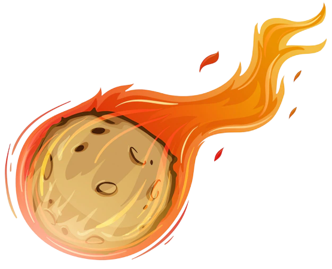

Mi blog.
Este es la nueva cabecera que tiene mi HTML
Akatsuki
Akatsuki es una organización ficticia del manga y anime Naruto. Inicialmente, el propósito de los Akatsuki era buscar la paz, pero finalmente se convirtió en una organización de mercenarios. Fue presentado por primera vez en la primera parte de la serie, pero sus miembros comenzaron a tener más importancia en la segunda parte como los principales antagonistas de Naruto Shippūden.

Da like en mi perfil
Suscribite a mis redes sociales. Da like, Seguir y Comparte.